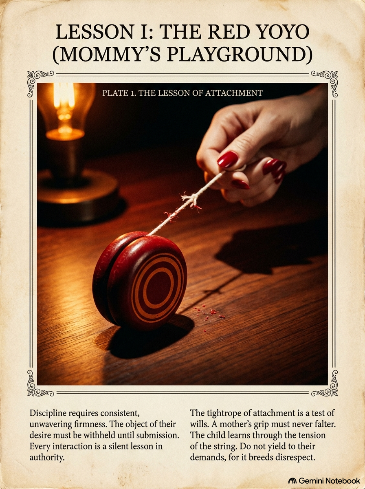
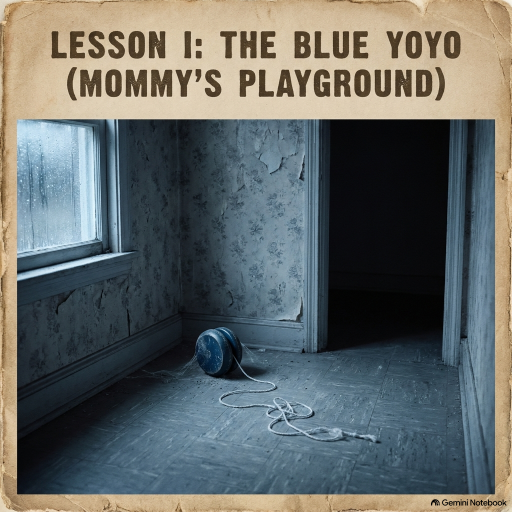

LECCIÓN I: EL PRINCIPIO DEL YOYÓ
VARIANTE ACTIVA // RED
RED YOYO

PARÁMETRO DE APLICACIÓN:
Tensión extrema de la cuerda, castigo tangible y recordatorio físico de que el retorno al regazo materno siempre conlleva fricción y dolor.
REGISTRO LÍRICO (ENGLISH):
"Up and down, high and low, my little yoyo,
Today I give you love, tomorrow I lose control.
I say 'I love you' only when I want to play,
And when I get tired, on the floor you will stay.
What is a little blood between you and me?
If I make you bleed, it's so my love you can see."
CAJA DE MÚSICA DISTORSIONADA • PIANO GRAVE • TENSIÓN
VARIANTE PASIVA // BLUE
BLUE YOYO

PARÁMETRO DE APLICACIÓN:
Abandono de la cuerda en el suelo, silencio prolongado y suspensión total del contacto hasta que la iniciativa infantil quede completamente extinta.
REGISTRO LÍRICO (ENGLISH):
"Up and down, up and down goes my little yo-yo,
today I give you love, tomorrow I scream and I curse.
I tell you 'I love you' only when I say so,
and when I get tired, I'll drop you in the dirt.
Down to the ground, and you go down again,
just wait for my affection, stand quietly right here."
PIANO MINIMALISTA • SINTETIZADOR FRÍO • ECO DE PASILLO